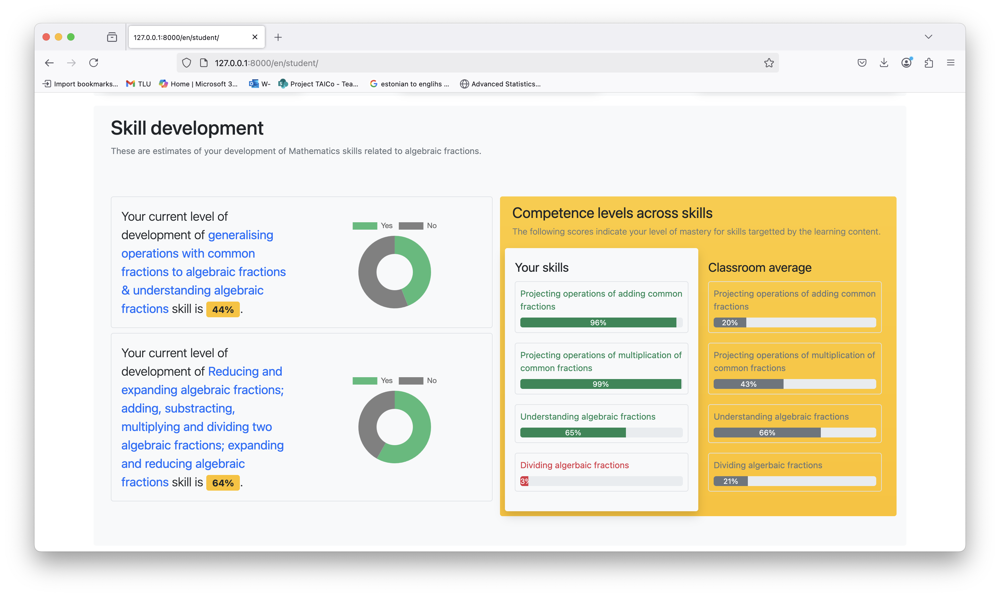
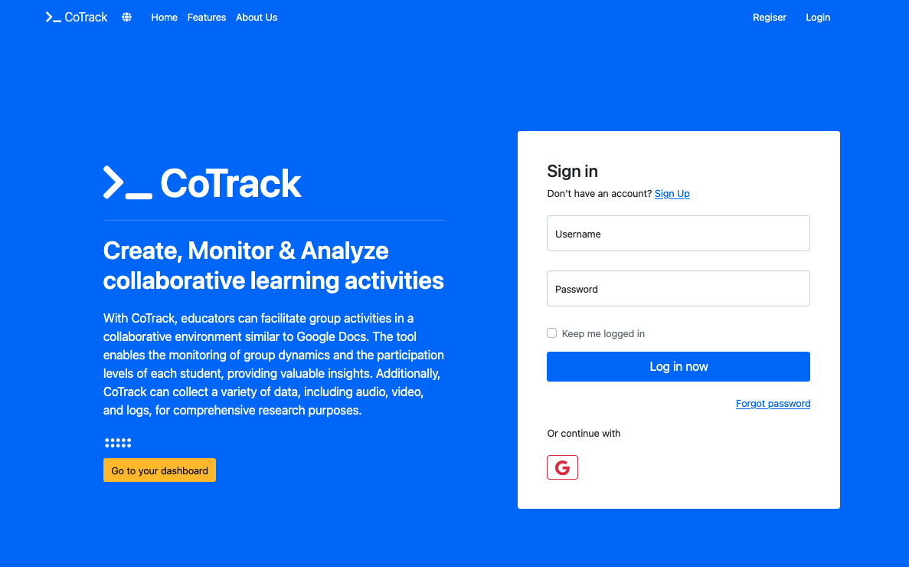
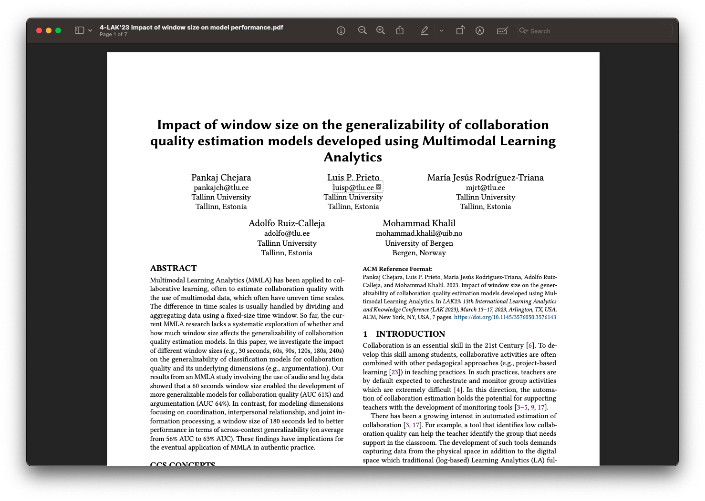
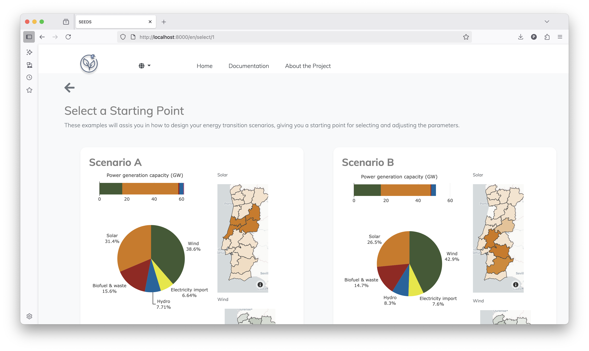
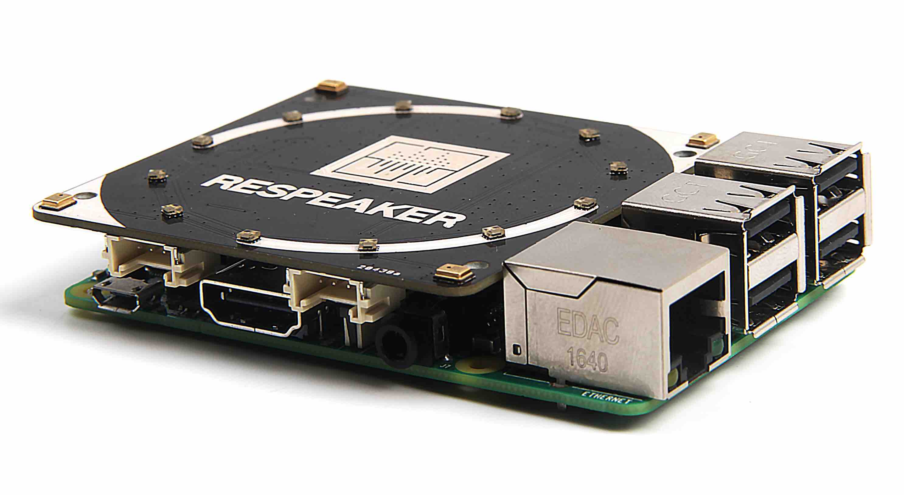

I build models people can trust and interfaces they actually use — from real-time classroom collaboration analytics to microbiome sequencing pipelines.
National registry data access, medical health records analysis, bioinformatics pipelines and research proposals with healthcare partners.





Plus a Best Paper nomination at LAK ’23, the Estonian Youth Board Special Research Award, and EC-TEL and Dora Plus scholarships.
All awards